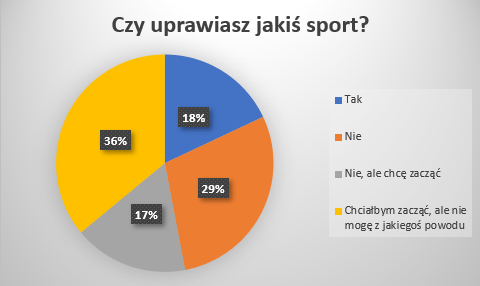
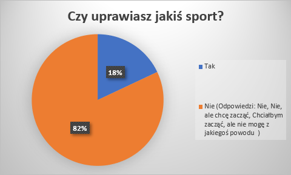
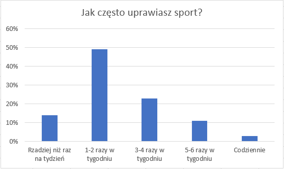
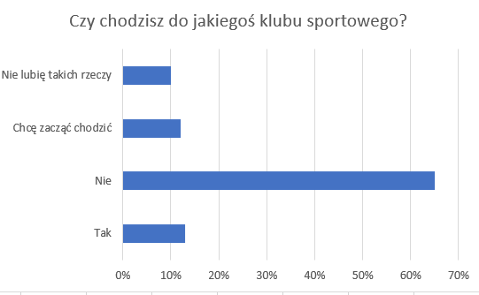
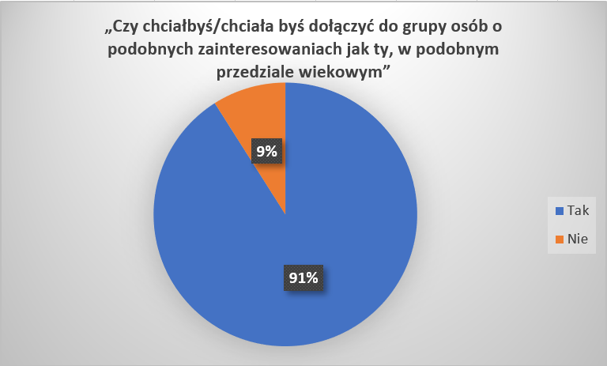

O nas
PNCP jest to Platforma Internetowa na której poznasz ludzi takich jak ty!
Na niej znajdziesz:
Ludzi tym samym hobby co ty
Przyjaciół do końca swoich dni
Motywacje do działania
PNCP jest to Platforma Internetowa na której poznasz ludzi takich jak ty!

Problem Globalny: Znikoma Aktywność Fizyczna w śród młodzieży. Która prowadzi do najpowszechniejszej choroby XXI wieku w śród osób
młodych czyli otyłości.
Zauważyliśmy, że wielu naszych rówieśników nie uprawia, żadnej aktywności fizycznej. Jak wiemy sport/ćwiczenia
fizyczne jest bardzo potrzebny młodemu organizmowi. Dzięki wysiłkowi dostarczamy organizmowi różnych bodźców. Sport szczególnie
pomaga w koncentracji w szkole, oraz wpływa szczególnie na nasze samopoczucie. Dostrzegając ten problem, przeprowadziliśmy ankietę
w naszej placówce edukacyjnej (VIII Liceum im. Adama Mickiewicza w Poznaniu). Wyniki dla nas były szokujące.
Wynikało z niej że
Ponad połowa uczniów z naszej szkoły nie uprawia sportu ( wliczane do nie uprawiania sportu były odpowiedzi „Nie”,
„Nie, ale chcę zacząć”,Chciałbym zacząć, ale nie mogę z jakiegoś powodu)
Zdjęcia odpowiedzi ankietowanych na wykresie kołowym:


Kolejnym pytaniem na ankiecie było „Jak często uprawiasz sport? (Nie wliczając wychowania fizycznego). W tym pytaniu również odpowiedzi nie były zadowalające. Szczegółowy rozkład odpowiedzi zaprezentowany poniżej:
Zdjęcie odpowiedzi ankietowanych na wykresie słupkowym:

Następnym pytaniem na ankiecie było czy osoba ankietowana uczęszcza do klubu sportowego.
Odpowiedź była taka sama jak się spodziewaliśmy, ponad 87 % osób w naszej szkole nie chodzi do klubu sportowego.
Odpowiedzi ankietowanych na wykresie słupkowy:

Ostatnim decydującym pytaniem a jednocześnie naszą propozycją na zmniejszenie skali tego problemu było: „Czy chciałbyś/chciała byś dołączyć do grupy osób o podobnych zainteresowaniach jak ty, w podobnym przedziale wiekowym”.
Ku wielkiemu zdziwieniu ponad 91% osób była zainteresowana:
Odpowiedzi ankietowanych na wykresie kołowym:

Liczba ankietowanych: 571 ( ankieta była dostępna na serwerze google 15.10.2019 – 22.10.2019 )
Pomniejszenie skali tego problemu – Nasza propozycja :
Naszą propozycją na pomniejszenie skali tego problemu jest: łączenie użytkowników w grupy o podobnych zainteresowaniach oraz przedziale wiekowym. Pomiędzy członkami takich grup po pewnym czasie rodzi się koleżeństwo a nawet przyjaźń. Wzrasta samoocena siebie oraz rodzi się poczucie przynależności społecznej. Dużo łatwiej pójść na siłownie z „ekipą” niż samemu. Razem jest większa motywacja oraz oczywiście zabawa.
Stworzyliśmy platformę internetową która ma na celu pomoc w znalezieniu ludzi takich jak ty!!! Ludzi z którymi możesz wreszcie dzielić swoje pasje. Wielu z nas miało taki czas w życiu, że chciało zacząć trenować jakąś nową dyscyplinę, ja chciałem np. : „rolkarstwo”. Niestety żaden z moich przyjaciół/kolegów/znajomych nie był zainteresowany spróbowaniem. Z każdym dniem moja motywacja malała. Nie chciałem samemu tego robić, bo jak wiadomo trenowanie z kimś jest dużo fajniejsze, bardziej motywujące.
Na tej platformie możesz stać się mentorem dla wielu osób zainteresowanych tym samym co ty. Możesz dołączać do niezliczonych grup z różnych dyscyplin. Tworzyć je, zyskiwać wszelakie korzyści.
Uzasadnienie naszego projektu:
Czytaj więcej
Sport jest istotny w życiu każdego nastolatka, aktywność fizyczna kształtuje rozwój fizyczny i psychiczny oraz emocjonalną sferę nastolatków. Sport pomaga rozwijać zdolności przywódcze oraz empatię, które natomiast zmniejszają ryzyko zaburzeń emocjonalnych, tak często pojawiających się w trudnym okresie dorastania. Uprawiające sporty nastolatki dużo częściej przywiązują uwagę do swojego zdrowia, dbają o dietę, zbilansowany tryb życia oraz dobre nawyki, które skutkują mniejszym ryzykiem występowania np. chorób serca czy otyłości w dorosłym życiu.
Stare i mądre przysłowie mówi, że sport to zdrowie i trudno się z tym stwierdzeniem nie zgodzić. Sport pozytywnie wpływa na całe ciało oraz zdrowie. Koryguje wady postawy, zwiększa odporność organizmu, poprawia ogólny stan zdrowia. Zmniejszona zostaje łamliwość kości oraz pozytywnie wpływa na elastyczność stawów. Wysiłek dotlenia komórki całego ciała i mózgu, pobudza układ oddechowy, co pogłębia próg ruchomości klatki piersiowej.
Pozytywnym aspektem aktywności fizycznej, jest fakt, że młodzi ludzie zdają sobie sprawę, że mają wpływ na swoje życie. Rozwija to ambicje nastolatka oraz jego kreatywność, dojrzałość i odpowiedzialność. Sport powiązać można również z umiejętnościami społecznymi. Współczesny czas niesie za sobą wiele niebezpieczeństw. Kuszą one wątpliwą atrakcyjnością – są to i. in. środki psychoaktywne, palenie papierosów, spożywanie alkoholu, wagary, przestępczość, ryzykowne zachowania seksualne, uzależnienie od mediów, internetu, zaburzenia odżywiania. Dlatego tak ważna jest stabilność psychiczna u tak młodych osób oraz pozytywna samoocena. Warto więc kształtować pozytywne wzorce zachowań oraz osobowość nastolatka właśnie przez sport.
Sport ma niewątpliwie pozytywny wpływ na kontakty społeczne, które rozwijają zdolność empatii, towarzyskość, solidarność, uczą zdrowej rywalizacji oraz pobudzają do rozwoju własnych zainteresowań. Poprawia umiejętność znoszenia porażek i przyjmowania krytyki, pracy zespołowej oraz wytrwałości w dążeniu do celu – tym samym wpływa pozytywnie na psychikę nastolatka .
Aby zachęcić nastolatka do uprawiania sportu, należy wytłumaczyć jakie korzyści płyną z uprawiania aktywności fizycznej oraz musi on posiadać motywacje do działania.
Potwierdza to wiele badań naukowych najbardziej znanym jest:
AKTYWNOŚĆ FIZYCZNA MŁODZIEŻY SZKOLNEJ W WIEKU 9-17 LAT aktualne wskaźniki, tendencje ich zmian oraz wybrane zewnętrzne i wewnętrzne uwarunkowania PROJEKT REALIZOWANY NA ZLECENIE MINISTERSTWA SPORTU I TURYSTYKI RAPORT KOŃCOWY CZ. I : Badania ilościowe
Z roku 2013 pod kierownictwem:
dr hab. n. o zdr. Joanna Mazur – Kierownik zespołu (redakcja raportu)
dr. hab. med. Anna Oblacińska dr med. Maria Jodkowska
dr pedagog. Agnieszka Małkowska-Szkutnik
dr n. hum. Izabela Tabak
dr n. hum. Dorota Zawadzka
mgr. Anna Dzielska
mgr. Magdalena Stalmach
mgr. Katarzyna Radiukiewicz
Konsultacja naukowa: Uniwersytet Warszawski, Wydział Pedagogiczny Katedra Biomedycznych Podstaw Rozwoju i Seksuologii prof. dr hab. med. Barbara Woynarowska
Akademia Wychowania Fizycznego Józefa Piłsudskiego w Warszawie, Wydział Wychowania Fizycznego, Katedra Teorii Wychowania i Pedagogiki, Zakład Pedagogiki dr n. o kult. fiz. Hanna Nałęcz